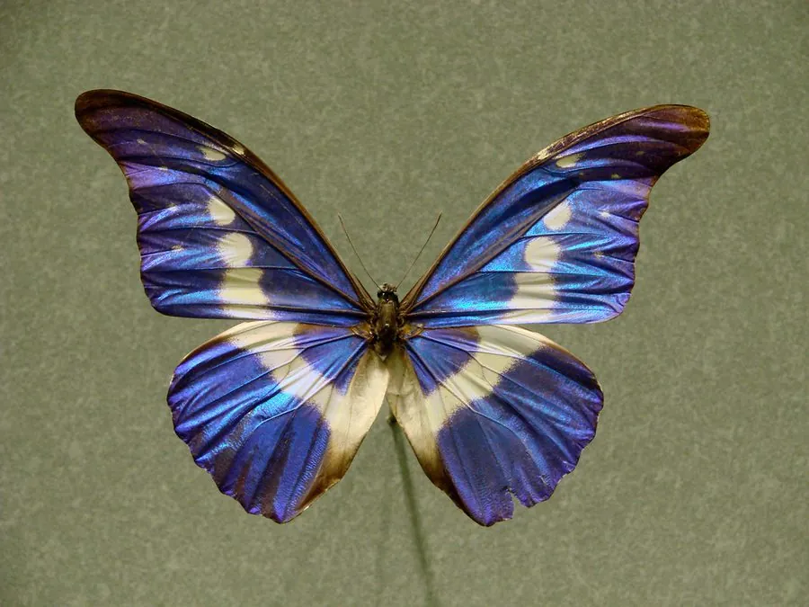

昆虫 · 动物界
海伦娜闪蝶 Morpho helena

闪蝶属中少数以白色为主的大型蝴蝶，翅面泛淡蓝或银白色金属光泽，是亚马孙雨林中珍贵的观赏蝶种。
- 分类
- 门节肢动物门纲昆虫纲目鳞翅目科蛱蝶科属闪蝶属
- 栖息环境
- 亚马孙热带雨林的树冠层和林下，偶见于河谷沙地
- 地理分布
- 南美亚马孙盆地，包括巴西、秘鲁、哥伦比亚等地
- 保护级别
- 暂无评估；受雨林砍伐与标本贸易影响
物种志
海伦娜闪蝶翅展约 10–12 cm，雄蝶翅面呈银白至淡蓝色，带有金属光泽，翅缘镶黑色边框，后翅边缘排列着细小的眼斑；雌蝶翅面多为褐色，斑纹更朴素，与雄蝶差异明显。翅形宽大，飞行时如纸片飘动。
它生活在亚马孙雨林的树冠层和中下层，成虫飞行呈波浪状起伏，喜欢吸食腐果和树液，雄性有时会聚集在潮湿沙地吸水。幼虫取食豆科等植物的叶片。海伦娜闪蝶分布在南美亚马孙盆地，是闪蝶属中数量较少、标本价值较高的种类，长期受到标本贸易的关注。森林砍伐和过度采集使它的栖息地缩小，目前尚无系统的保护评估，雨林保护区的建立对其种群延续至关重要。
形态与习性
- 食性成虫吸食腐果和树液；幼虫取食豆科植物叶片
- 翅展约 10–12 cm
- 结构色翅鳞结构反射光线，呈银白或淡蓝金属光泽
- 雌雄差异雄蝶银白带光泽，雌蝶褐色较朴素
- 习性飞行呈波浪状，雄性会聚集在湿地吸水
- 分布南美亚马孙盆地
趣味知识
- 海伦娜闪蝶的银白色光泽来自翅鳞的微观结构，而不是色素。
- 它是闪蝶属中较罕见的种类，标本在收藏市场上价格很高。
- 雄蝶会成群聚集在河边湿沙上吸水，补充矿物质。